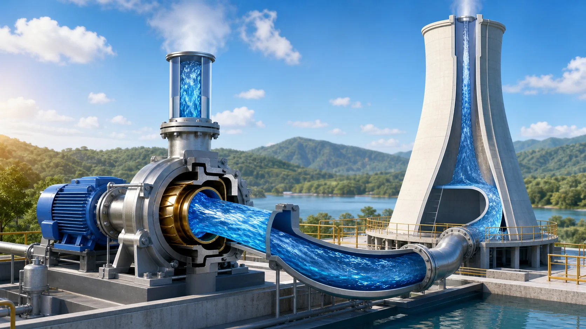
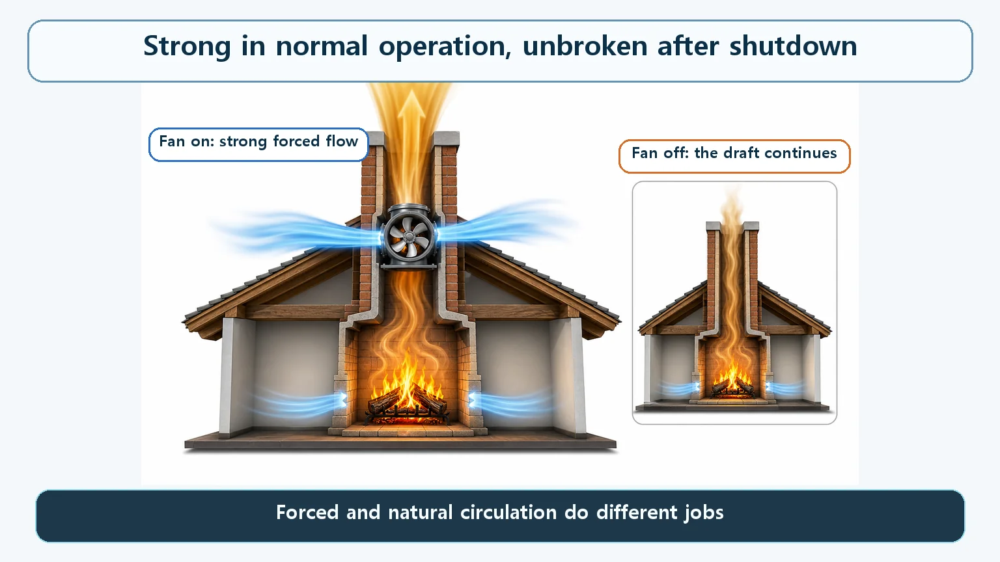
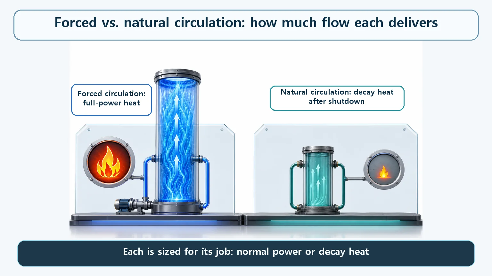

Heat Transfer & Thermal Hydraulics · 143
A Fan Next to the Chimney — Forced vs. Natural Circulation in a Reactor
Pumps move the big flow that full-power heat demands; the chimney effect keeps a smaller, steady flow going for decay heat when they stop.

Large commercial reactors run on forced circulation: coolant pumps push a large flow through the core to carry full-power heat. Natural circulation, driven only by density and height differences, is the designed and proceduralized last line of defense that keeps removing decay heat if every pump stops, and some small modular reactors use it for normal operation from day one.
The fan beside the chimney
Remember the chimney-style circulation that runs by itself? Heated coolant becomes lighter and rises, cooled coolant becomes heavier and sinks, and a flow forms with no pump at all.
But in practice, that chimney usually has a fan installed right next to it. In normal times the fan runs hard and moves far more air (in a reactor, coolant) far more forcefully than the chimney effect ever could. If the power fails and the fan stops, the chimney is still there, so at least a minimum flow keeps going. Let's look at when, and why, a real reactor uses the "fan" (forced circulation) and the "chimney" (natural circulation).
In normal operation, the fan runs hard
While a large commercial reactor is producing power, it almost always uses forced circulation. Big impellers (rotating blades) in the reactor coolant pumps push the coolant hard around the loop that links the piping, the core and the steam generators. The chimney effect is not the star of normal operation.
Why not? The driving force of the chimney effect comes only from the weight (density) difference between the hot and cold sides and the height difference between the core and the steam generator. That force is real but limited, and it has a basic weakness: if the resistance (friction) along the piping rises even a little, the flow quickly drops. A reactor coolant pump, on the other hand, can create as much pressure difference as needed by adjusting its speed, regardless of temperature. It is just like a fan: the harder it spins, the more air it moves.
A reactor core pours out an enormous amount of heat, and carrying it away safely takes a lot of coolant moving fast. The flow needed for the rated output of a large commercial reactor, hundreds to thousands of megawatts, is very hard to get from a natural flow like the chimney effect alone. So whether it is a pressurized water reactor (PWR) or a boiling water reactor (BWR), most large commercial reactors keep their coolant pumps running and use forced circulation as the default during normal operation.
When does the chimney really matter? The last line of defense
So why does natural circulation matter so much? For emergencies.
Even after a reactor shuts down (trips), the radioactive decay of fission products keeps producing residual heat (decay heat) for some time, and it has to be removed steadily. Fortunately this heat is much smaller than the reactor's output during normal operation, and it falls quickly over time.
But what if an accident such as a loss of offsite power stops every coolant pump, that is, every fan? This is where the chimney comes in. By design there is a substantial height difference between the reactor core and the steam generators (typically known to be on the order of a few meters to over ten meters), so coolant heated in the core rises and coolant cooled in the steam generator sinks, creating a flow without any pump. This flow is much smaller than forced circulation, but it is designed from the start to be ample for carrying away the decay heat, which falls quickly after shutdown.
That is why operating procedures at real nuclear plants formally include steps for cooling the core by natural circulation alone, and cooling the plant down gradually if needed, when all coolant pumps are lost. The International Atomic Energy Agency (IAEA) has even compiled natural-circulation phenomena in light water reactor plants into dedicated technical documents. Natural circulation is not a theoretical possibility kept just in case; it is a last line of defense that has been designed, verified and written into procedures to actually work.

Seen side by side — how big the difference is
Put it in a chart and the difference is obvious. Set a bar for the flow under forced circulation next to a bar for the flow when all coolant pumps have stopped and only natural circulation is working, and the natural-circulation bar is much smaller. Think of the difference between water blasting from a fire hose and water trickling down a tilted pipe.
But the key point is not that the natural-circulation bar is small. What matters is that the small flow is designed for the moment it is needed. During normal operation the reactor must handle a lot of heat, so it needs the big bar (forced circulation). Once the reactor has already stopped and only decay heat remains, the small bar (natural circulation) is enough. Each bar is sized for its own situation and its own job.

Some reactors choose the chimney from day one
Is natural circulation always just a backup? Not quite. Some small modular reactors (SMRs) under development have no coolant pumps, no fan, at all; they are designed to cool the core by natural circulation alone, from normal operation until the end of their lives.
The reason is simple. Instead of chasing the large output of a big reactor, these designs make the height difference between the core and the steam generator (the height of the chimney) large enough to maximize the natural-circulation driving force, shaping the whole design around natural circulation from the start. With no pump in the first place, the worry "what if the pump fails?" disappears from the design, which is counted as an advantage. For large reactors natural circulation is the last line of defense; for some small reactors it is the way of life they chose from the beginning.
Easy to confuse: "So isn't losing forced circulation dangerous?"
"Natural circulation is old technology; forced circulation is more advanced." It is not a ranking but a difference in purpose. Forced circulation is chosen to handle large output with large flow; natural circulation is chosen to guarantee minimum cooling without pumps. Given that some of the newest SMRs actively adopt natural circulation, it is hard to call it outdated.
"If forced circulation stops, the core melts right away." Even if all coolant pumps are lost, the design provides natural circulation as an alternative cooling path, so heat at the decay-heat level keeps being removed. Natural circulation cannot carry as much flow as forced circulation, though, so the reactor cannot keep running at rated power. It is a valid alternative once the reactor has shut down and only decay heat remains.
"Natural circulation can cool forever." It is a finite means that works only within the limits of pipe resistance and height difference. It is a provision designed on the assumption that decay heat falls far enough over time, not an unlimited cooling capacity.
Key takeaways
- Forced circulation flows because coolant pumps create a pressure difference; natural circulation flows on its own from the density difference due to temperature and the height difference.
- Most large commercial reactors use forced circulation in normal operation, because large output needs large flow.
- Natural circulation keeps removing decay heat even when all coolant pumps are lost: a last line of defense that is actually designed and proceduralized.
- Some SMRs are designed to run on natural circulation alone, so it is not always just a backup.
- The two are not better and worse; they are tools prepared for different situations: producing large output vs. providing minimum cooling.